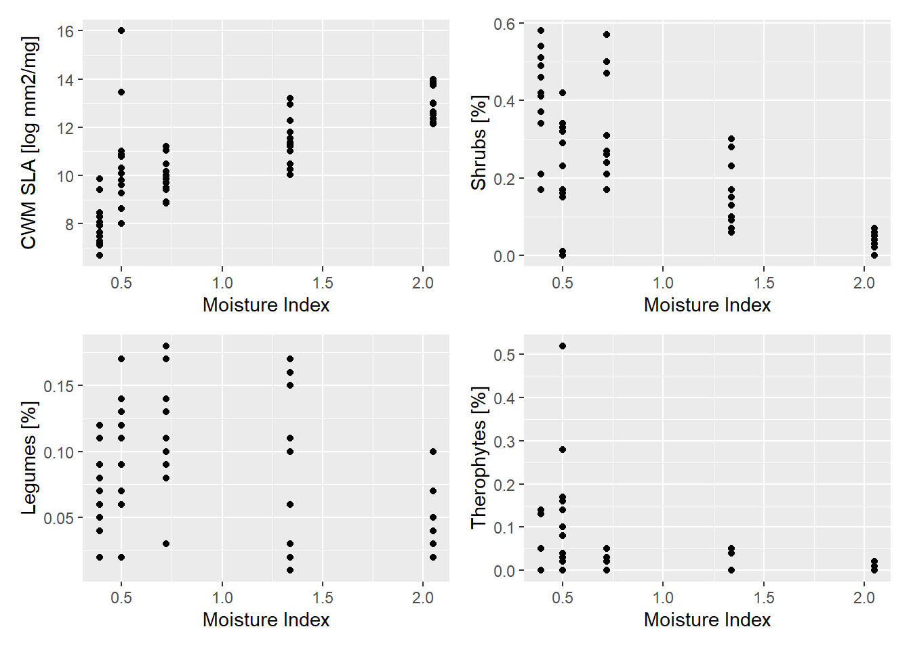
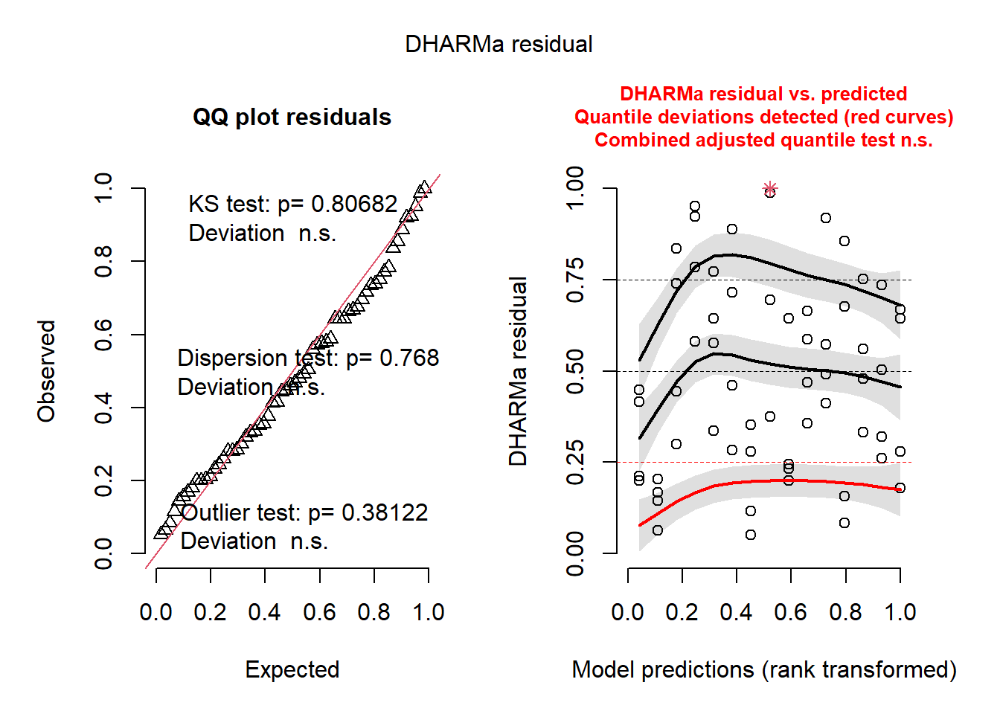
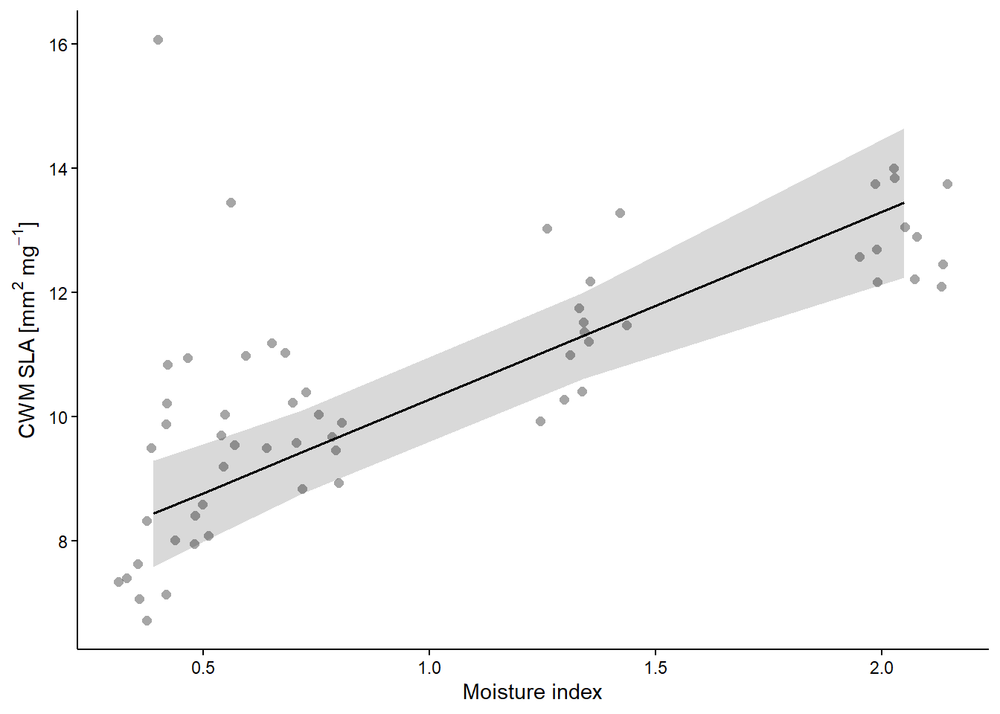
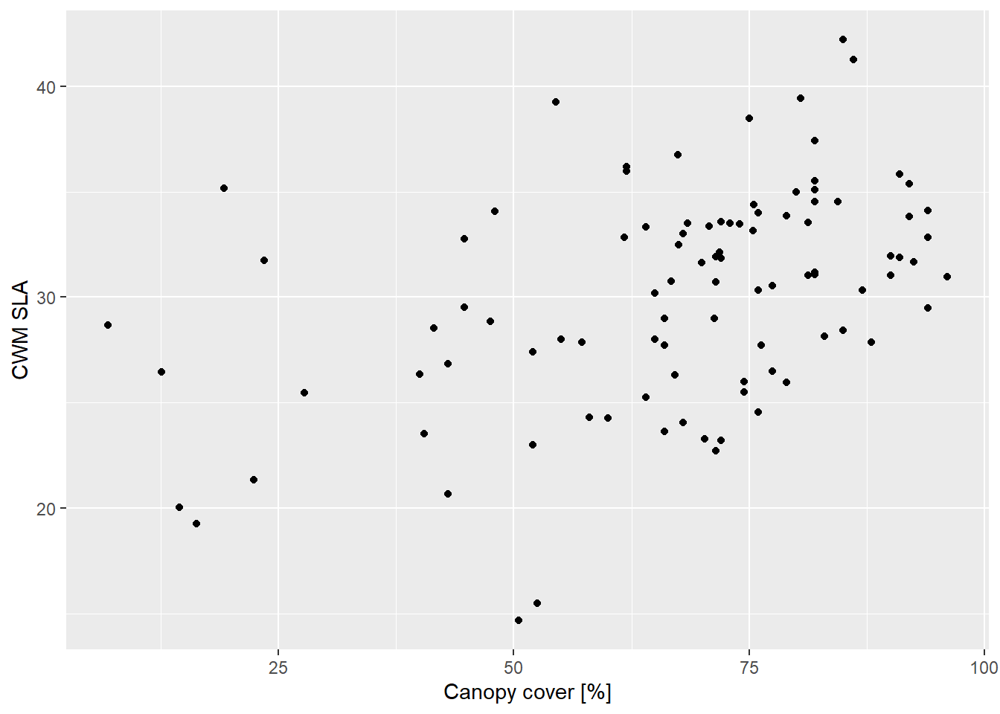
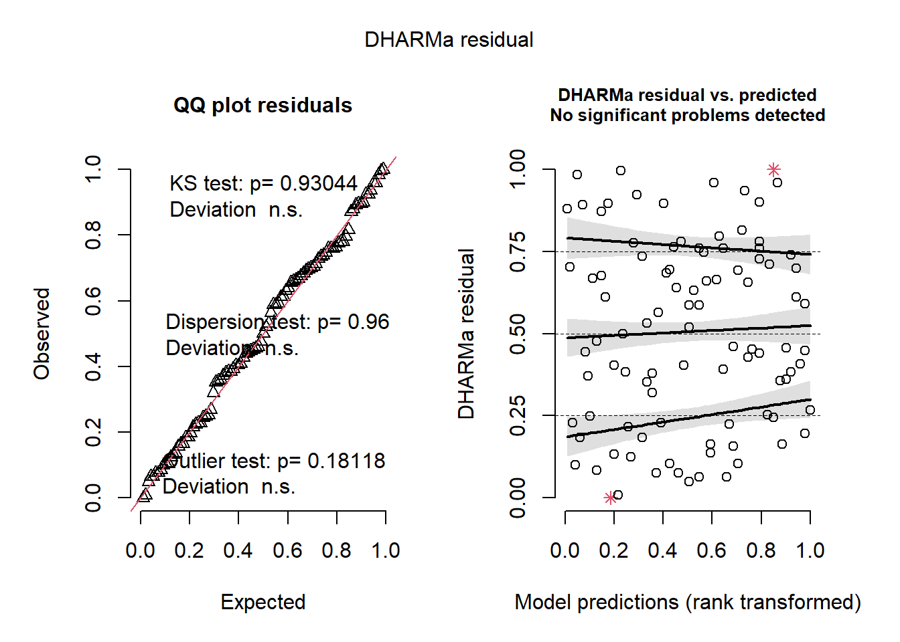
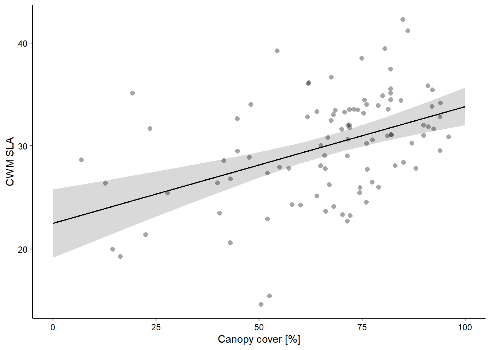

library(here)
library(tidyverse)
library(patchwork) # combine several ggplots into the same graphic
library(DHARMa)
rm(list = ls())Analysis of Ecological Data
CWM regression approach
1 Technichal University of Munich, TUM School of Life Sciences, Chair of Restoration Ecology, Emil-Ramann-Straße 6, 85354 Freising, Germany
 https://orcid.org/0000-0001-5372-4174
https://orcid.org/0000-0001-5372-4174


2 University of Applied Sciences Weihenstephan-Triesdorf, Institute of Ecology and Landscape, Am Hofgarten 1, Building A10, 85354 Freising, Germany
 .
.
This tutorial uses Bello et al. (2021, Ch 5.1.4) and Zelený (2021).
1 Learning outcomes
The students are able to…
- Apply (3) data exploration before modelling
- Calculate (3) linear models with CWMs of functional traits or Ellenberg indicator values and environmental variables.
- Interpret (3) a model critique produced with
DHARMa - Memorize (1) that a debate about the reliability of community weighted means exist
2 Preparation
2.1 Load libraries and functions
2.2 Load data
sites_spain <- read_csv(
here::here("data", "processed", "data_processed_sites_spain_4.3.csv"),
col_names = TRUE, col_types = cols(
.default = "?",
grazing = "f"
)
)
sites_ammer <- read_csv(
here::here("data", "processed", "data_processed_sites_ammer_4.4.csv"),
col_names = TRUE, col_types = cols(.default = "?")
)
# A new example dataset
load(url('https://raw.githubusercontent.com/zdealveindy/anadat-r/master/data/vltava.RData'))
species_vltava <- vltava$herbs$spe
sites_vltava <- vltava$env %>%
rownames_to_column("plot") %>%
mutate(plot = paste0("comm", plot)) # create a plot_id
traits_vltava <- vltava$herbs$traits %>%
mutate(SLA_sqrt = sqrt(SLA))3 CWM regression (community level)
Doing linear models needs 10 steps from stating the appropriate question to simulations from the model (Zuur & Ieno 2016, Fig. 1). We do not go into detail of modelling and touch only the points 3 (conduct data exploration), 6 (fit the model), 7 (validate the model), and 9 (create a visual representation). For your theses, it is recommended to go carefully throught the 10 steps.
3.1 Spain data
3.1.1 Data exploration (Zuur & Ieno Step 3)
Before starting modelling, you should do a data exploration and keep to a protocol like the popular one of Zuur et al. (2010, Fig. 1) and work through the protocol step by step. We do only a very reduced version due to time constraints (here only Zuuer et al. step 6).
Note: Zuur et al. (2010, Fig. 1) steps 2 and 3 are meanwhile part of the model critique after modelling.
Let’s see if CWM changes along the climatic gradient. For example, let’s explore visually a bit the results before running any analysis, just choosing some of the potential graphs (4 in this case):
p1 <- sites_spain %>%
ggplot(aes(x = moisture.index, y = cwm.abu.sla)) +
geom_point() +
labs(x = "Moisture Index", y = "CWM SLA [log mm2/mg]")
p2 <- sites_spain %>%
ggplot(aes(x = moisture.index, y = cwm.abu.gf.shrub)) +
geom_point() +
labs(x = "Moisture Index", y = "Shrubs [%]")
p3 <- sites_spain %>%
ggplot(aes(x = moisture.index, y = cwm.abu.leg.1)) +
geom_point() +
labs(x = "Moisture Index", y = "Legumes [%]")
p4 <- sites_spain %>%
ggplot(aes(x = moisture.index, y = cwm.abu.lf.th)) +
geom_point() +
labs(x = "Moisture Index", y = "Therophytes [%]")
(p1 + p2) / (p3 + p4)
We can already reach some conclusions while looking at these figures. The CWM SLA is increasing with moisture index, likely because of a decrease in shrub species with moisture. If fact, the different growth forms tend to have different SLA.
We can possibly also expect that there is slightly more leguminous species at the intermediate moisture conditions and that the presence of annuals (i.e. therophytes) is slightly higher in the two driest belts [Note that in the second driest site, with moisture index=0.5, there was overall a slightly greater grazing history that in the other sites, hence the generally strange behaviour of the points in these plots, with respect to the general trends].
3.1.2 Modelling (Zuur & Ieno Step 6)
We can now have a specific look at the statistics and we can also include grazing in the analysis. For example we can use a simple linear model (although maybe a REML, restricted maximum likelihood model, would have been more accurate) where we test the effect of moisture and grazing intensity on the CWM for SLA:
m1 <- lm(cwm.abu.sla ~ moisture.index * grazing, data = sites_spain)
anova(m1)Analysis of Variance Table
Response: cwm.abu.sla
Df Sum Sq Mean Sq F value Pr(>F)
moisture.index 1 129.548 129.548 69.6381 2.748e-11 ***
grazing 2 10.639 5.319 2.8595 0.06601 .
moisture.index:grazing 2 9.190 4.595 2.4700 0.09410 .
Residuals 54 100.457 1.860
---
Signif. codes: 0 '***' 0.001 '**' 0.01 '*' 0.05 '.' 0.1 ' ' 1summary(m1)
Call:
lm(formula = cwm.abu.sla ~ moisture.index * grazing, data = sites_spain)
Residuals:
Min 1Q Median 3Q Max
-2.3341 -0.8714 -0.1273 0.5996 5.5796
Coefficients:
Estimate Std. Error t value Pr(>|t|)
(Intercept) 7.2683 0.5792 12.550 < 2e-16 ***
moisture.index 3.0122 0.4923 6.118 1.1e-07 ***
grazing2 2.3960 0.8190 2.925 0.00502 **
grazing1 0.4258 0.8190 0.520 0.60525
moisture.index:grazing2 -1.5000 0.6963 -2.154 0.03570 *
moisture.index:grazing1 -0.4203 0.6963 -0.604 0.54858
---
Signif. codes: 0 '***' 0.001 '**' 0.01 '*' 0.05 '.' 0.1 ' ' 1
Residual standard error: 1.364 on 54 degrees of freedom
Multiple R-squared: 0.5979, Adjusted R-squared: 0.5607
F-statistic: 16.06 on 5 and 54 DF, p-value: 1.123e-09This shows that in general the strongest effect (i.e. ‘filter’) on CWM for SLA is by the moisture index but grazing also modifies CWM for SLA, specifically increasing it (likely because of an increase in therophytes and decrease in woody species). However the effect of grazing on CWM for SLA depends on moisture (see the interaction moisture.index:grazing), with a weaker effect in more moist conditions.
You have to write down for your results the following: F(3,56) = 26.3, p = 9.3e-11, R2adj = 0.56
3.1.3 Model critique (Zuur & Ieno Step 7)
We can not go into details about linear models in this course, but should always present your model critique in the appendix of your thesis. The DHARMa package of Hartig (2022) helps you with that and it is explained by a well prepared vignette (Hartig 2022)
simulationOutput <- simulateResiduals(fittedModel = m1, plot = FALSE)
plot(simulationOutput)
You have assumptions for linear models:
- Normal distribution of residuals
- homogeneity of the variances (homoscedasticity)
- Independence of data sampling
We can see on the left graph that the residuals are normally distributed, because all dots are along the diagonal line. On the right graph, we see that the variances are homogeneous because the dots are equally distributed (“stars-in-the-sky plot”). The DHARMa package helps you with the interpretation, because it highlights problems in red.
Check for collinearity with the variance inflation factor, which should be below 3 or at least 10 (Zuur et al. 2010)
car::vif(m1)there are higher-order terms (interactions) in this model
consider setting type = 'predictor'; see ?vif GVIF Df GVIF^(1/(2*Df))
moisture.index 3.00000 1 1.732051
grazing 13.00372 2 1.898965
moisture.index:grazing 20.21585 2 2.120425All variables have a VIF < 10 which means that we do not have problems wich colinearity.
3.1.4 Plot (Zuur & Ieno Step 9 and 10)
p1 <- ggeffects::ggpredict(m1, "moisture.index")
p1# Predicted values of cwm.abu.sla
moisture.index | Predicted | 95% CI
-----------------------------------------
0.39 | 8.44 | 7.58, 9.30
0.50 | 8.77 | 7.99, 9.56
0.72 | 9.44 | 8.77, 10.11
1.34 | 11.30 | 10.61, 12.00
2.05 | 13.44 | 12.24, 14.65
Adjusted for:
* grazing = 0plot(p1, show_data = TRUE, jitter = 0.1) +
labs(x = "Moisture index", y = expression(CWM~SLA~"["*mm^2~mg^-1*"]")) +
theme(
title = element_blank(),
axis.text = element_text(color = "black"),
axis.line.x = element_line(color = "black"),
axis.line.y = element_line(color = "black"),
axis.title = element_text(color = "black"),
axis.ticks = element_line(color = "black"),
panel.grid = element_blank()
)
rm(list = setdiff(ls(), c("sites_spain", "sites_ammer", "sites_vltava", "species_vltava", "traits_vltava", "m1")))Task
- Plot the grazing index like the moisture index
3.2 Forest understory vegetation (Zelený)
We will use the Vltava dataset to analyse the relationship between the community-weighted mean of one of the leaf traits (specific leaf area, SLA) and one of the environmental variables (light intensity in the understory). The theory predicts that shade-tolerant species will produce leaves with higher SLA (i.e. per gram of dry mass they will produce leaves with the larger area) to optimize the gain from photosynthesis in the dim light of shaded conditions. Let’s use the real data to see whether this works.
3.2.1 Preparation
First, have a few at the new example dataset:
skimr::skim(sites_vltava)
skimr::skim(traits_vltava)Since not all species have assigned trait values, we need to first make sure we delete species with missing trait values from both vltava_spe and vltava_traits:
data_traits <- traits_vltava %>%
filter(!is.na(SLA)) %>%
arrange("name") %>% # make sure that it is in a certain order
rownames_to_column("name")
data_species <- species_vltava %>%
rownames_to_column("plot") %>%
mutate(plot = paste0("comm", plot)) %>%
pivot_longer(-plot) %>%
pivot_wider(names_from = "plot", values_from = "value") %>%
arrange("name") %>% # make sure that it is in a certain order
semi_join(data_traits, by = "name") %>%
pivot_longer(-name, names_to = "plot", values_to = "value") %>% # bring back the species names to column names
pivot_wider(names_from = "name", values_from = "value") %>%
column_to_rownames(var = "plot")
data_traits <- data_traits %>%
column_to_rownames(var = "name")Let’s calculate the community-weighted mean of SLA for individual vegetation plots:
data <- FD::dbFD(
as.matrix(data_traits), data_species,
CWM.type = "all",
corr = "cailliez",
calc.FRic = FALSE,
calc.FDiv = FALSE
)Species x species distance matrix was not Euclidean. Cailliez correction was applied. data2 <- data$CWM %>%
data.frame() %>%
rownames_to_column("plot")
sites_vltava <- sites_vltava %>%
left_join(data2, by = "plot")3.2.2 Data exploration (Zuur & Iesno Step 3)
sites_vltava %>%
ggplot(aes(x = COVERE32, y = SLA)) +
geom_point() +
labs(x = "Canopy cover [%]", y = "CWM SLA")
3.2.3 Modelling (Zuur & Ieno Step 6)
Calculate a linear model regression of CWM SLA on the canopy cover:
m3 <- lm(SLA ~ COVERE32, data = sites_vltava)
anova(m3)Analysis of Variance Table
Response: SLA
Df Sum Sq Mean Sq F value Pr(>F)
COVERE32 1 506.51 506.51 22.843 6.4e-06 ***
Residuals 95 2106.51 22.17
---
Signif. codes: 0 '***' 0.001 '**' 0.01 '*' 0.05 '.' 0.1 ' ' 1summary(m3)
Call:
lm(formula = SLA ~ COVERE32, data = sites_vltava)
Residuals:
Min 1Q Median 3Q Max
-13.5722 -3.6966 -0.1836 2.8474 10.5909
Coefficients:
Estimate Std. Error t value Pr(>|t|)
(Intercept) 22.48813 1.66233 13.528 < 2e-16 ***
COVERE32 0.11361 0.02377 4.779 6.4e-06 ***
---
Signif. codes: 0 '***' 0.001 '**' 0.01 '*' 0.05 '.' 0.1 ' ' 1
Residual standard error: 4.709 on 95 degrees of freedom
Multiple R-squared: 0.1938, Adjusted R-squared: 0.1854
F-statistic: 22.84 on 1 and 95 DF, p-value: 6.4e-06You have to write down for your results the following: F(1,95) = 22.8, p = 6.4e-06, R2adj = 0.19
3.2.4 Model critique (Zuur & Ieno Step 7)
simulationOutput <- simulateResiduals(fittedModel = m3, plot = FALSE)
plot(simulationOutput)
The model critique seems to be OK.
# car::vif(m3) # not possible because only one independent variable
rm(list = setdiff(ls(), c("sites_spain", "sites_ammer", "sites_vltava", "species_vltava", "traits_vltava", "m1", "m3")))3.2.5 Plot (Zuur & Ieno Step 9)
p3 <- ggeffects::ggpredict(m3, "COVERE32")
p3# Predicted values of SLA
COVERE32 | Predicted | 95% CI
-----------------------------------
0 | 22.49 | 19.19, 25.79
10 | 23.62 | 20.77, 26.48
30 | 25.90 | 23.91, 27.88
40 | 27.03 | 25.44, 28.62
50 | 28.17 | 26.93, 29.41
60 | 29.30 | 28.30, 30.31
70 | 30.44 | 29.48, 31.40
100 | 33.85 | 32.02, 35.67
Not all rows are shown in the output. Use `print(..., n = Inf)` to show
all rows.plot(p3, show_data = TRUE, jitter = 0.1) +
labs(x = "Canopy cover [%]", y = expression(CWM~SLA)) +
theme(
title = element_blank(),
axis.text = element_text(color = "black"),
axis.line.x = element_line(color = "black"),
axis.line.y = element_line(color = "black"),
axis.title = element_text(color = "black"),
axis.ticks = element_line(color = "black"),
panel.grid = element_blank()
)
So far it goes well – as we see, the relationship is positive and statistically clear (P < 0.001).
Task
- Calculate linear models for two of your CWMs
- Show R2, F and p values
- Present the model critique in your appendix
- Plot the model: Use a solid line in your graph, if the effect is significant, and a dashed line, if it is non-significant.
4 Debate
(further reading, optional)
4.1 Can we trust the p-value of CWM-based analyses?
Some authors have suggested that CWM should not be used because the analyses using CWM provide too optimistic p-values. As summarized by David Zelený (2018), we think that the question is not if we can trust the the p-value of CWM-based analyses but rather which type of questions are asked. If we are interested in observing changes in CWM along gradient, whatever are the causes, then analyses on CWM are robust and interesting. If the question is, for example, if the MAJORITY of species in drier habitats have given traits, then a different type of analyses should be done, basically the analyses at the species level presented in Chapter 3 and in the R material Ch 2 (Bello et al. 2021).
Let’s now focus on the suggestion by David Zelený (2018) on how to run a conservative tests to evaluate the significance of environmental factors on CWM values. The suggestion by Zelený can be summarized as to run randomizations tests and, basically, verify if the R2 of a given model (for example those obtained in the previous section) is higher than expected by chance. Randomizations can be done in different ways, but we suggest that a simple and effective one is by simply shuffling species names in the trait matrix.
4.2 Ltava data
The problem is that even with random traits, we have actually a rather good chance to obtain a significant relationship between CWM and environmental variables. Let’s see it on the same data, by permuting the SLA values among species, calculating CWM from these randomized trait values, and testing the regression of this randomized CWM on the original environmental variable:
# P_rand <- replicate(1000, expr = {
# SLA_rand <- sample(SLA_1)
# CWM_SLA_rand <- apply(com_1, 1, FUN = function(x) sum(x*SLA_rand)/sum(x))
# LM_rand_col <- lm(CWM_SLA_rand ~ cover)
# P_value <- anova(LM_rand_col)$`Pr(>F)`[1]
# return(P_value)
# })
# sum(P_rand < 0.05) Surprisingly, around 280 out of 1000 regressions are significant - but if the test has a correct Type I error rate, it should be around 5% = 50 (out of 1000) significant results. Clearly, the standard parametric test has an inflated Type I error rate.
The solution to this problem is to apply the “max” permutation test, which combines results of row- and column-based permutation, and chooses the higher (less significant) P-value.
# CWM_SLA_w <- weimea::cwm(com = com, traits = SLA)It can thus be used directly for testing the regression of CWM and environmental variable, using the function test_cwm:
# CWM_cover <- weimea::test_cwm(cwm = CWM_SLA_w, env = cover, method = 'lm', test = 'all')
# CWM_coverThe test output is longish. Important is the P_max value in the end, which is significant (P = 0.02). You can also see how it was calculated, because the function returns P-values of both row- (P_row) and column-based (P_col) permutation test. P_par is the result of the parametric F-test, identical to the result of anova function above.
# plot(CWM_cover)The conclusion is that the relationship between CWM of SLA for herb species in the forest understory and the light availability is significant even if tested by the “max” test. This offers a strong suggestion that stronger light may filter the species into the community with lower SLA leaves.
4.3 Zelený (2018)
The recent paper by Peres-Neto, Dray, and ter Braak (2017), focused on the CWM approach, revealed several surprising facts. First, and perhaps the most important finding, is that standard plot-level tests analysing CWM–sample attributes relationship have inflated Type I error rate, returning more optimistic results than is warranted by the data. “Standard tests”, in the meaning used here, include plot-level parametric tests such as the t-test for correlation and F-test for regression or ANOVA, or permutation tests randomizing sample attributes (equivalent to randomizing rows in the species composition matrix). Second, CWM correlation has relatively poor statistical properties, because the correlation coefficient is highly variable and can become rather high even in the case of random species attributes. Third, the CWM approach is numerically related to the seemingly different fourth-corner problem (Legendre et al. 1997), which relates species attributes and sample attributes via the species composition matrix without explicitly calculating the weighted means of species attributes. Fourth, the ‘max test’ (Cormont et al. 2011), which solves the problem of inflated Type I error rate in the fourth-corner approach (ter Braak et al. 2012), does the same in the CWM approach. The max test undertakes two independent permutation tests, one testing the species attributes–species composition link and the other testing the sample attributes–species composition link, and chooses the higher p-value as a result. In conclusion, Peres-Neto et al. (2017) suggested replacing the CWM approach with the more efficient fourth-corner approach.
The findings of Peres-Neto et al. (2017) will undoubtedly cause a revolution in the analysis of trait–environment, and generally, species attributes–sample attributes relationships. It is quite relevant to expect that scientific literature using CWM approach with standard tests is flooded with overly optimistic studies reporting significant relationships between various species and sample attributes, which in fact are merely analytical artefacts. However, the use of the CWM approach has a long tradition in ecology, and calculating the CWM of species attributes and relating them to sample attributes is quite often practical or required by theory. Many studies defining our current empirical knowledge about the trait–environment relationship or the efficiency of Ellenberg-type indicator values have been published, and many studies will use this approach in the future. What can be done about that? Moreover, if the CWM approach is used in future studies, is it always necessary to replace the standard tests with the max solution?
The use of CWM approach as a plot-level analysis is fully justified in cases where the question is explicitly focused on relating the community-level values of species attributes to environment, such as the CWM of traits or mean Ellenberg species indicator values. The CWM approach with a standard (row-based) test returns a correct Type I error rate only when the tested hypothesis assumes that species composition is linked to species attributes and one is testing whether the species composition is linked to sample attributes (CWM ~ env, BUT not CWM ~ diversity indices). If the plot-level analysis is not required, alternative methods may be more powerful namely fourth corner or SNC approaches.
sessionInfo()R version 4.4.2 (2024-10-31 ucrt)
Platform: x86_64-w64-mingw32/x64
Running under: Windows 11 x64 (build 26100)
Matrix products: default
locale:
[1] LC_COLLATE=German_Germany.utf8 LC_CTYPE=German_Germany.utf8
[3] LC_MONETARY=German_Germany.utf8 LC_NUMERIC=C
[5] LC_TIME=German_Germany.utf8
time zone: Europe/Berlin
tzcode source: internal
attached base packages:
[1] stats graphics grDevices datasets utils methods base
other attached packages:
[1] DHARMa_0.4.7 patchwork_1.3.0 lubridate_1.9.4 forcats_1.0.0
[5] stringr_1.5.1 dplyr_1.1.4 purrr_1.0.2 readr_2.1.5
[9] tidyr_1.3.1 tibble_3.2.1 ggplot2_3.5.1 tidyverse_2.0.0
[13] here_1.0.1
loaded via a namespace (and not attached):
[1] Rdpack_2.6.2 permute_0.9-7 rlang_1.1.5
[4] magrittr_2.0.3 ade4_1.7-22 compiler_4.4.2
[7] mgcv_1.9-1 vctrs_0.6.5 pkgconfig_2.0.3
[10] crayon_1.5.3 fastmap_1.2.0 magic_1.6-1
[13] labeling_0.4.3 promises_1.3.2 rmarkdown_2.29
[16] tzdb_0.4.0 haven_2.5.4 nloptr_2.1.1
[19] bit_4.5.0.1 xfun_0.50 jsonlite_1.8.9
[22] later_1.4.1 ggeffects_2.1.0 parallel_4.4.2
[25] cluster_2.1.8 R6_2.5.1 gap.datasets_0.0.6
[28] stringi_1.8.4 qgam_1.3.4 car_3.1-3
[31] boot_1.3-31 Rcpp_1.0.14 iterators_1.0.14
[34] knitr_1.49 base64enc_0.1-3 httpuv_1.6.15
[37] Matrix_1.7-2 splines_4.4.2 timechange_0.3.0
[40] tidyselect_1.2.1 rstudioapi_0.17.1 abind_1.4-8
[43] yaml_2.3.10 vegan_2.6-10 doParallel_1.0.17
[46] codetools_0.2-20 lattice_0.22-6 plyr_1.8.9
[49] shiny_1.10.0 withr_3.0.2 evaluate_1.0.3
[52] pillar_1.10.1 BiocManager_1.30.25 gap_1.6
[55] carData_3.0-5 renv_1.1.0 foreach_1.5.2
[58] geometry_0.5.1 reformulas_0.4.0 insight_1.0.1
[61] generics_0.1.3 vroom_1.6.5 rprojroot_2.0.4
[64] hms_1.1.3 munsell_0.5.1 scales_1.3.0
[67] minqa_1.2.8 xtable_1.8-4 glue_1.8.0
[70] tools_4.4.2 FD_1.0-12.3 lme4_1.1-36
[73] grid_4.4.2 ape_5.8-1 rbibutils_2.3
[76] datawizard_1.0.0 colorspace_2.1-1 nlme_3.1-167
[79] repr_1.1.7 Formula_1.2-5 cli_3.6.3
[82] gtable_0.3.6 digest_0.6.37 htmlwidgets_1.6.4
[85] skimr_2.1.5 farver_2.1.2 htmltools_0.5.8.1
[88] lifecycle_1.0.4 mime_0.12 bit64_4.6.0-1
[91] MASS_7.3-64